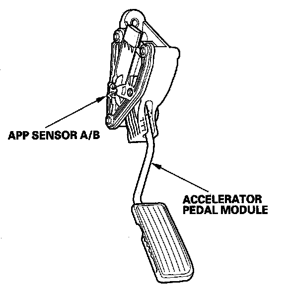

Operation CHARM
: Car repair manuals for everyone.
Home
>>
Acura
>>
2007
>>
MDX V6-3.7L
>>
Repair and Diagnosis
>>
Powertrain Management
>>
Sensors and Switches - Powertrain Management
>>
Sensors and Switches - Fuel Delivery and Air Induction
>>
Accelerator Pedal Position Sensor
>>
Description and Operation
>>
Accelerator Pedal Position (APP) Sensor
Accelerator Pedal Position (APP) Sensor

Accelerator Pedal Position (APP) Sensor
As the accelerator pedal position changes, the sensor varies the signal voltage to the PCM.